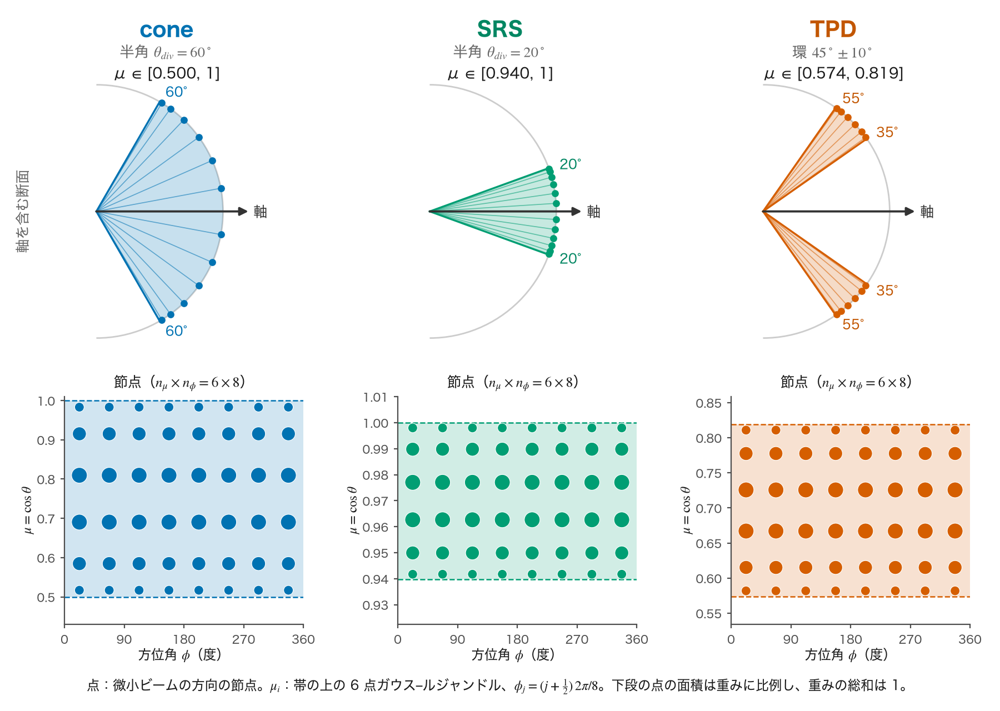
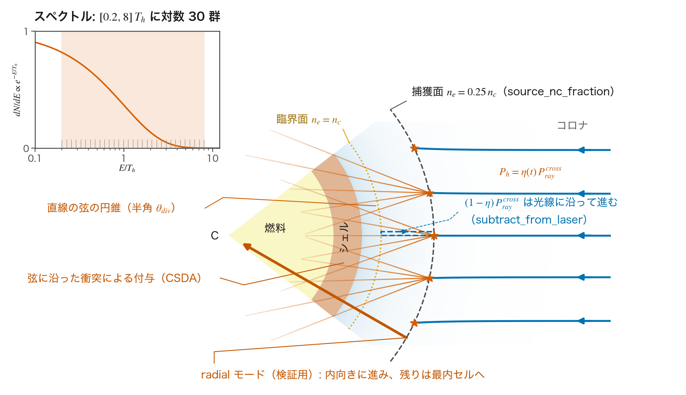

ホット電子 reference
TENRYU のホット電子（hot electron）モデルは、Colaïtis ら [1] と、LLE（Laboratory for Laser Energetics、米国ロチェスター大学）の 1D 流体コード LILAC に倣った、あらかじめ与える形のレーザープラズマ不安定性（laser–plasma instability、LPI）予熱（preheat）を、レーザーのパワーの捕獲（capture）、3 次元マクスウェル分布（3D Maxwellian）の放出スペクトル、円錐方向の求積（quadrature）、直線の弦（chord）に沿う輸送、衝突による減速（collisional slowing-down）、物質へのエネルギー付与（deposition）として組み立てたものである。LPI の波の成長や飽和を自己無撞着（self-consistent）に解くのではなく、ホット電子温度は較正（calibration）された入力として与え、変換効率（conversion efficiency）η(t) は較正された入力または縮約クロージャ（reduced closure）から与える。この計算に固有の用語は用語の節で説明する。
物理機構
レーザー強度が閾値を超えると、パラメトリック不安定性（parametric instability） — 2 プラズモン崩壊（two-plasmon decay、TPD）と誘導ラマン散乱（stimulated Raman scattering、SRS） — が大振幅の電子プラズマ波（electron plasma wave）を励起する。これらの不安定性が主に起こる場所が四分の一臨界密度（quarter-critical density）付近になるのは、そこで娘波（daughter wave）の電子プラズマ波の振動数がレーザー振動数の約半分となり、TPD・SRS の周波数整合条件（frequency-matching condition）を満たせるからである。励起されたプラズマ波は電子を捕捉（trapping）し、熱的な主成分をはるかに超える数十〜数百 keV まで加速する。その飛程（range）は熱的な電子よりずっと長いため、衝撃波に先行してシェルを貫き、燃料を予熱して断熱度（adiabat）を上げ、圧縮性能を劣化させる。この予熱を定量化することが、この物理カーネルの目的である。
これらの不安定性の成長と飽和は運動論的（kinetic）なスケールで起こる。TENRYU はホット電子温度 \(T_h\)（T_hot_eV）を指定し、変換効率（conversion efficiency）η(t) は較正（calibration）した入力または局所のプラズマ量で駆動する縮約クロージャ（reduced closure）から与える。捕獲の規則が生成源の位置と変換に使うレーザーパワーを定める。
既定の 3 次元マクスウェル分布の解析的なモーメントから、対数間隔の各群のパワー重み（power weight）\(W_g\) とパワーで重み付けした平均エネルギー（power-weighted mean energy）を求める。各群の端点値の差を足すと中間項が打ち消し合い、丸め誤差の範囲で \(\sum_g W_g=1\) になる。既定の 1D 円錐輸送では、立体角の求積点を候補とし、各群の弦を 1 本抽出する。
1D では、連続減速（continuous slowing-down）によって経路に沿う電子の運動エネルギーが減る。衝突による角度散乱（collisional angular scattering）は経路の弦方向への平均射影を減らすため、同じエネルギー損失に対して弦方向に進む距離は短くなる。外面のシースは逸出（escape）しない分を反射させ、再流入（reflux）を表す。飛行時間を時間刻みごとに区切ることで、飛行中の電子は後続の時間刻みにも輸送される。エネルギー台帳（energy ledger）には、付与、逸出、未解決エネルギー、および飛行中エネルギーの変化を計上する。
モデルの適用範囲と生成源
Laser.hot_electron.enable=True でモデルを有効にする。raytrace_2d では、内向きの光線が \(n_e=f_s n_c\) を密度の増加方向に初めて横切る点に生成源を置く。スカラーの簡易指定では密度比 \(f_s\) の既定値は 0.25（source_nc_fraction）である。通常の区間は交差点で分け、交差点までの逆制動輻射（inverse bremsstrahlung、IB）吸収を捕獲の前に適用する。臨界密度に達する区間では、区間入口のパワーから捕獲分を差し引いた値を末尾の吸収計算に渡す。radial_absorption_1d では、中点の \(n_e/n_c\) が \(f_s\) 以上になる最初のセルに入るパワーを使い、その外面に動径内向きの生成源を置く。
\(P_{h,ray}(t)\) は時刻 \(t\) に 1 本の光線から変換するパワー、η(t) は変換効率、\(P_{ray}^{cross}\) は上の捕獲の規則で定まる光線のパワーである。交差ビームエネルギー転送（cross-beam energy transfer、CBET）との併用時は、初回の追跡と各再計算（replay）で捕獲事象（capture event）の位置に減耗を適用する。事象までの光学的厚さは通常の区間では交差点までの値、臨界密度に達する区間では入口から 0 である。最終の再計算で、参照光線ごとにポート順に合算した捕獲記録と交差点の半径・方向を輸送に渡す。併用には cbet.geometry_mode="port_section" と eta_mode="model" が必要である。
η(t) の与え方は 4 通りある。スカラーの簡易指定（scalar shorthand）では、eta_hot が一定値を、eta_hot_table が初期化時に凍結（freeze）する時間表を与える。sources は最大 4 つの cone / TPD / SRS のチャネル（channel）を定義し、チャネルごとに捕獲面、定数または表の η、温度、エネルギー窓、角度帯を設定できる。複数のチャネルは \(f_s\) の昇順に発火し、レーザーの減耗を有効にすると同じ順で逐次適用する。さらに eta_mode="model" は、局所のプラズマ量で駆動される η の時間発展を選ぶ。いずれもホット電子生成の縮約処方であり、自己無撞着な LPI の求解にはならない。
多群スペクトルと円錐角度モデル
$$ \frac{d\dot N}{dE}=C(E/T_h)^\alpha e^{-E/T_h},\qquad \alpha=\begin{cases}\tfrac12&\texttt{maxwellian_3d},\\0&\texttt{exponential},\end{cases} $$\(\dot N\) は単位時間あたりの放出電子数、\(E\) は電子のエネルギー、\(T_h\) はスペクトル温度、\(\alpha\) はスペクトルの形を決める指数、\(C\) は規格化定数である。全機構とスカラーの簡易指定で spectrum="maxwellian_3d"（3 次元マクスウェル分布、3D Maxwellian）が既定であり、"exponential" で指数分布を選べる。
\(T_h\) は T_hot_eV を換算定数 eV_to_erg で eV から erg に変換した温度、\(E_{min}\) と \(E_{max}\) は放出窓の下端と上端である。\(\dot N\) は単位時間あたりの放出電子数、\(E\) は電子のエネルギー、\(P_h\) はチャネルのホット電子パワーである。窓内で積分した放出パワーが \(P_h\) に等しくなるように \(C\) を決める。
既定温度（TPD 60 keV、SRS 45 keV、cone 50 keV）は、3 次元マクスウェル分布を用いた推定値に対応する（Christopherson ら [9]、Solodov ら [10]）。温度と、その推定に用いたスペクトルの形を組み合わせる（Barlow ら [11]）。同じ理由で、相対論的なスペクトルは採用しない。
$$ \begin{aligned} {[E_{min},E_{max}]}&=[\texttt{E_min_over_Th}T_h,\texttt{E_max_over_Th}T_h],\\ E_{edge,g}&=E_{min}(E_{max}/E_{min})^{g/N_E},\quad g=0,\ldots,N_E. \end{aligned} $$\(E_{min}\) と \(E_{max}\) は窓の端、\(T_h\) はスペクトル温度、\(N_E\) は n_energy_groups（既定 50）、\(g\) は境界の添字、\(E_{edge,g}\) は境界のエネルギーである。E_min_over_Th と E_max_over_Th は、窓の下端と上端を \(T_h\) で割った入力値である。群はこの境界で対数刻みに分割する。
\(w=E/T_h\) はエネルギー \(E\) を温度 \(T_h\) で割った無次元量、\(\alpha\) はスペクトルの指数である。\(\Gamma(s,w)\) は次数 \(s\)、下限 \(w=E/T_h\) の上側不完全ガンマ関数（upper incomplete gamma function）であり、\(\psi_1\) と \(\psi_2\) はそれぞれエネルギーの一次・二次モーメントに用いる関数である。両スペクトルの閉形式（closed form）は次式となる。
$$ \begin{aligned} \alpha=0:\quad &\psi_1(w)=(1+w)e^{-w},\\ &\psi_2(w)=(2+2w+w^2)e^{-w}. \end{aligned} $$\(\alpha=0\) は指数分布、\(w=E/T_h\) は無次元エネルギー、\(\psi_1\) と \(\psi_2\) は一次・二次モーメントの関数である。
$$ \begin{aligned} \alpha=\tfrac12:\quad &\psi_1(w)=\tfrac34\sqrt\pi\,\operatorname{erfc}(\sqrt w) +e^{-w}\sqrt w(\tfrac32+w),\\ &\psi_2(w)=\tfrac{15}{8}\sqrt\pi\,\operatorname{erfc}(\sqrt w) +e^{-w}\sqrt w\bigl(\tfrac{15}{4}+w(\tfrac52+w)\bigr). \end{aligned} $$\(\alpha=1/2\) は 3 次元マクスウェル分布、\(w=E/T_h\) は無次元エネルギー、\(\psi_1\) と \(\psi_2\) は一次・二次モーメントの関数、\(\operatorname{erfc}\) は相補誤差関数（complementary error function）、\(\pi\) は円周率である。
$$ \begin{aligned} W_g&=\frac{\psi_1(w_{lo})-\psi_1(w_{hi})}{\psi_1(w_{min})-\psi_1(w_{max})},\\ E_g&=T_h\frac{\psi_2(w_{lo})-\psi_2(w_{hi})}{\psi_1(w_{lo})-\psi_1(w_{hi})}. \end{aligned} $$\(W_g\) は群 \(g\) のパワー重み、\(E_g\) はその群のパワーで重み付けした平均エネルギー、\(T_h\) はスペクトル温度である。\(w_{lo}\) と \(w_{hi}\) は群の下端と上端のエネルギーを \(T_h\) で割った値、\(w_{min}\) と \(w_{max}\) は窓の下端と上端のエネルギーを \(T_h\) で割った値であり、\(\psi_1\) と \(\psi_2\) は上記のモーメントの関数である。
重みは同じ関数の群境界での値の差なので、総和では中間項が相殺し、数値求積なしで \(\sum_g W_g=1\) となる。浮動小数点演算では丸め誤差の範囲で 1 に等しい。パワー \(P\) をすべての群に配分する弦では、群 \(g\) の電子数は毎秒 \(P W_g/E_g\) 個である。1D の時間依存円錐輸送でも同じ式を使い、候補のパワーの総和を \(P\) として各群を抽出した軌道に割り当てる。
既定の窓は \([0.2,8]T_h\) である。窓外のパワー分率は、3 次元マクスウェル分布で約 1.15%、指数分布で約 2.05% であり、捨てずに窓内の群へ再規格化する。
入力の検査は、スカラーの簡易指定と各チャネルの両スペクトルに適用する。次の条件に反する入力は、namelist の構築時に ValueError として拒否する。
- 指数分布の群モーメントが erg 単位でアンダーフロー（underflow）することを避けるため、
T_hot_eVは 1 eV 以上とする。 - 群積分のアンダーフローを避けるため、
E_max_over_ThはE_min_over_Thより大きく、600 以下とする。E_min_over_Thは正とする。 - 群境界が近づきすぎることを避けるため、対数群幅 \(\ln(\texttt{E_max_over_Th}/\texttt{E_min_over_Th})/\texttt{n_energy_groups}\ge2^{-16}\) を要求する。
- 小さい無次元エネルギーや狭い群では、閉形式のほぼ等しい値どうしの差で桁落ち（cancellation）が起こる。群積分で 26 ビットを超える精度を失う窓と群数の組合せを拒否する。桁落ちによる誤差の上限を見積もるために使う群積分の下限の見積り、またはモーメント関数 \(\psi_1\)・\(\psi_2\) の値が 0 または非有限となり、この上限を計算できない場合も同じ検査で拒否する。
生成源のパワーと方向の扱いは次のとおりである。
- 生成源に使うパワーは、レーザーの経路に応じた捕獲の規則で決まる。
- 円錐の求積では \(\mu\) にガウス–ルジャンドル求積（Gauss–Legendre quadrature）の点、\(\phi\) に等間隔点を使う。重みの総和は 1 であり、既定の 1D 円錐放出では各求積点が方向の候補となる。
- \(f_s=\texttt{source_nc_fraction}=0.25\) — 既定の捕獲面の位置である四分の一臨界密度である。
subtract_from_laser=Trueのとき、捕獲後に \((1-\eta)P^{cross}\) がレーザーの経路を進む。Falseのときは捕獲に使った光線パワーを減らさず先へ進める。
円錐の軸は光線の進行方向であり、theta_div_deg が半角を定める。極角の余弦には n_mu 点のガウス–ルジャンドル求積、方位角には n_phi 点の等間隔求積を使う。半角を変えると、候補となる弦の集合とそれぞれが通る面密度が変わる。検証用の radial は 1 本の動径に沿って内向きに進む。TPD と SRS の角度帯は用語の節に示す。
この計算で使う用語
ホット電子がセルへ付与するエネルギーは、電子が出発する半径、出発する向き、電子のエネルギーに強く依存する。1D の流体計算が持つのは半径方向の分布だけなので、TENRYU は光線が運ぶパワーを、生成源、方向、エネルギー群に分けて、電子の輸送の計算へ渡す。この分け方に使う語は、TENRYU の実装に固有の意味をもつので、まとめて定義する。なお、この頁では、ホット電子がセルへエネルギーを渡すことを付与、レーザー光の吸収によってセルへエネルギーが入ることを沈着と書き分ける。
捕獲面と生成源
捕獲面は、電子密度がレーザーの臨界密度 \(n_c\) の \(f_s\) 倍となる \(n_e=f_s n_c\) の面である。光線が密度の増加方向にこの面を初めて横切る点が交差点である。捕獲の規則が定めるパワー \(P_{ray}^{cross}\) のうち、割合 η をホット電子に変換する。subtract_from_laser=True のときは残りの \((1-\eta)P_{ray}^{cross}\) を、False のときは元のパワーを先へ進める。捕獲は、指定した効率または縮約クロージャによって生成を表す操作である。
捕獲面の密度の割合 \(f_s\) は、スカラーの簡易指定では source_nc_fraction、チャネルでは capture_nc_fraction で与える（どちらも 0 より大きく 1 以下）。既定は 0.25、すなわち四分の一臨界密度で、SRS のチャネルの既定は eta_mode="model" で 0.20、"legacy" で 0.18 である。\(f_s\) は、光線が捕獲面に届くまでに上流で吸収されるパワーと、電子が出発する半径を決める。
生成源（source）は、ホット電子が出発する位置、軸の向き、パワーの組である。位置は交差点の半径 \(r_s\)、軸の向きは交差点での光線の進行方向と外向きの動径方向のなす角の余弦 \(\mu_{axis}\)（動径方向に内向きの光線で \(-1\)）、パワーは \(P_h=\eta P^{cross}_{ray}\) である。光線 1 本が、チャネルごとに高々 1 つの生成源を作る。輸送の計算は、同じビン（bin）に入った生成源を 1 つにまとめたものを単位にする。
ビン
ビン（bin）は、生成源を、その生成源を含むセルと \(\mu_{axis}\) の区間の組でまとめた集まりである。\(\mu_{axis}\in[-1,1]\) を 16 等分した区間（幅 0.125）のどれに入るかと、\(r_s\) を含む流体セルが、ビンを定める。メッシュの外にある生成源は、最も近い端のセルのビンに入れる。パワーが 0 のビンは作らない。ビンごとに、次の量をもつ生成源を 1 つ作る。
$$ P=\sum_k P_k,\qquad r_s=\frac{1}{P}\sum_k P_k\,r_{s,k},\qquad \mu_{axis}=\frac{1}{P}\sum_k P_k\,\mu_{axis,k}. $$\(P\)、\(r_s\)、\(\mu_{axis}\) は集約後の生成源のパワー、半径、方向余弦である。ここで \(k\) はビンに入った生成源の添字、\(P_k\)、\(r_{s,k}\)、\(\mu_{axis,k}\) はその生成源のパワー、半径、方向余弦である。輸送はこの平均値から始めるので、出発点をセル面へ丸めることはない。ビンは (セル, 区間) の昇順に処理し、実行のたびに同じ順序になる。
ビンの数 16 は定数（コードの kAxisBins）で、namelist のキーではなく、変更できない。ビンにまとめる理由は、輸送の計算量を光線の本数から切り離すためである。1D の光線は 1 ビームあたり既定で 1000 本（Laser.rays_per_beam）あり、交差点ごとに輸送すると計算量が光線の本数に比例する。ビンにまとめると、輸送する生成源は 1 つのチャネルあたり高々 (セル数) × 16 個で、光線の本数に依らない。代償として、同じビンの光線は 1 つの平均の方向に束ねられるので、方向余弦の広がりは 0.125 の分解能でしか残らない。
2D RZ では、生成源の向きが 3 次元なので、ビンの切り方が異なる。セルごとに、子午面内の向き \(\chi=\operatorname{atan2}(k_R,k_Z)\) を \([-\pi,\pi]\) で 16 等分し（コードの kChiBins）、方位方向の成分 \(|k_\phi|\) が 0.3 未満か以上かで 2 つに分けて、1 セルあたり 32 個のビンにまとめる。ここで \(k_R\)、\(k_\phi\)、\(k_Z\) は、光線の進行方向の単位ベクトルの、動径方向、方位方向、軸方向の成分である。ビンごとの生成源は、パワーで重み付けした平均の位置と向き（向きは単位ベクトルに規格化する）をもつ。
微小ビーム
微小ビーム（electron beamlet）は、群 \(g\) の代表エネルギー \(E_g\) で 1 本の弦を進む、重み付きの電子の集団である。1D 円錐輸送で tracking="adiabatic" を選ぶと、ビンの生成源ごとに、伝播する方向の求積点とエネルギー群の組につき 1 本を出す。平面幾何では、面内方向のパワーは、生成源がボイドでないセルにあればそのセルに直接付与する。パワーは \(P\,w\,W_g\) であり、\(P\) はビンの生成源のパワー、\(w\) は方向重み、\(W_g\) は群重みである。全求積点が寄与する場合、既定の n_mu=6、n_phi=8、n_energy_groups=50 で 1 ビンにつき 2400 本となる。動径モードでは、チャネルの全パワーを集め、最外の生成源から各群につき 1 本を出す。
既定の円錐モード tracking="time_dependent" では、チャネル内の全ビンから弦の候補を集める。各エネルギー群について、Philox の乱数を用いて候補のパワーに比例する確率で 1 本を選ぶ。選んだ弦には、候補の合計パワーに群重みを掛けた値を割り当てる。候補があるチャネルは既定の群数で 50 本の行を放出する。GPU はセルごとの固定小数点（fixed-point）加算器に付与エネルギーを足す。
チャネルと角度帯
チャネル（channel）は、Laser.hot_electron.sources の 1 要素で、ホット電子を作る 1 つの機構を表す。機構（mechanism）は "cone"、"tpd"、"srs" のいずれかで、チャネルは最大 4 つ指定できる。チャネルごとに、捕獲面（capture_nc_fraction）、変換効率（eta または eta_table。eta_mode="model" ではモデルが与える）、温度（T_hot_eV）、エネルギー窓、角度帯を独立に決める。光線は外側から内向きに進むので、密度の低い捕獲面から順にチャネルを通り、光線のパワーの減耗を有効にすると \(f_s\) の昇順に逐次適用する。同じ \(f_s\) のチャネルは sources に書いた順である。機構によって、ホット電子が生成される密度、温度、方向の分布が違う。チャネルは、この違いを機構ごとの較正入力として別々に与える仕組みである。
スカラーの簡易指定（scalar shorthand）は、sources を使わず、Laser.hot_electron の直下のキー（source_nc_fraction、eta_hot、eta_hot_table、T_hot_eV、spectrum、n_energy_groups、E_min_over_Th、E_max_over_Th、theta_div_deg、n_mu、n_phi）で、cone のチャネルを 1 つだけ指定する形である（エラー文でもこの名前で呼ぶ）。これらのキーと sources は同時に指定できず、指定するとエラーになる。
角度帯（angular band）は、生成源の軸 — 交差点での光線の進行方向 — のまわりで、電子を出す方向の範囲である。軸からの極角の余弦 \(\mu\) の範囲と、軸のまわりの方位角 \(\phi\) で決まり、\(\phi\) については一様である。帯の中の方向は、立体角について一様な重みで、\(\mu\) を n_mu 点のガウス–ルジャンドル求積、\(\phi\) を n_phi 点の等間隔点で離散化した節点で表し、重みの総和は 1 である。節点の方向と動径方向の余弦 \(\mu_{dir}\) は次の式で決まる。
\(\mu_{dir}\) は節点の動径方向余弦、\(\mu\) は生成源の軸に対する極角の余弦、\(\mu_{axis}\) はその軸の動径方向余弦、\(\phi\) は軸まわりの方位角である。時間依存の円錐輸送では節点は方向の候補となる。機構ごとの帯と既定値は次の表のとおりである。帯と節点の配置は図Aに示す。
| 機構 | 角度帯（\(\mu\) の範囲） | \(f_s\) の既定 | \(T_h\) の既定 |
|---|---|---|---|
"cone" | \(\cos\theta_{div}\le\mu\le1\)（円錐）。\(\theta_{div}\) は theta_div_deg（既定 60°）。 | 0.25 | 50 keV（T_hot_eV = 5.0e4） |
"srs" | 同じ式（前方の細い円錐）。theta_div_deg の既定は 20°。 | 0.20（"model"）、0.18（"legacy"） | 45 keV（4.5e4） |
"tpd" | \(\cos(\theta_c+\Delta)\le\mu\le\cos(\max(0,\theta_c-\Delta))\)。\(\theta_c\) は tpd_theta_deg（既定 22.5°）、\(\Delta\) は tpd_delta_deg（既定 22.5°）。既定は捕獲軸から 45° 以内を満たす円錐で、立体角に一様である。 | 0.25 | 60 keV（6.0e4） |

tpd_theta_deg=45、tpd_delta_deg=10 と指定した環の例である。上段：生成源の軸（交差点での光線の進行方向、矢印）を含む断面。色を付けた扇形が帯で、cone は半角 \(60^\circ\)、SRS は半角 \(20^\circ\)、TPD は軸から \(35^\circ\) 以上 \(55^\circ\) 以下の環の断面である。線と点は、軸を含む断面に描いた \(n_\mu=6\) 点のガウス–ルジャンドル節点 \(\mu_i\) の極角を示す。下段：全節点 \(6\times8=48\) 点を方位角 \(\phi_j=(j+\tfrac12)\,2\pi/n_\phi\)（\(n_\phi=8\)）と \(\mu\) の平面に描いた。点線は帯の端、点の面積は重み \(w\) に比例し、重みの総和は 1 である。縦軸の範囲は機構ごとに帯に合わせて変えてある。\(\mu\) は生成源の軸からの極角の余弦であり、動径方向との余弦 \(\mu_{dir}\) は上の式で決まる。既定値は機構ごとの較正入力で、文献上の根拠は TPD が [2]–[4]、SRS が [5]–[7] である（リポジトリの docs/NUMERICS.md §5.11.1 に表がある）。TPD の角度帯の既定は捕獲軸を軸とする \([\cos45^\circ,1]\) の円錐であり、Colaïtis ら [1] と Barlow ら [11] に従う。TPD の既定では \(\theta_c-\Delta=0\) となり、角度帯の方向余弦の上端は \(\mu_{hi}=1\) である。他の指定値で \(\theta_c-\Delta>0\) とすれば、帯は環となる。1D では方位角を解像できないため、2 つの葉を方位角について平均したものを環で表す。\(\theta_c-\Delta\le0\) の帯は半角 \(\theta_c+\Delta\) の円錐となる。\(\theta_{div}=0\) の円錐は方向が軸の 1 つだけ、\(\Delta=0\) の環は方位角の \(n_\phi\) 個の節点だけになる。
キー angular_model は、すべてのチャネルに共通の選択である。"cone" は上の角度帯から選ぶ弦で電子を輸送し、"radial" は \(\mu=1\) の 1 方向だけを、チャネルの全パワーを集めた最外の生成源から内向きに進める検証用のモードである。機構の名前 "cone" はチャネルの種類を表し、angular_model の値とは別のものである。
弦と近点
弦は、電子の輸送を射影する直線である。球幾何では、シェル面との交点で弦をセルごとの区間に分ける。散乱で弦方向の平均射影がどう変わるかは飛程短縮に示す。
近点（pericenter）は、弦が球の中心に最も近づく点である。生成源の半径が \(r_s\)、弦の方向と動径方向の余弦が \(\mu_{dir}\) のとき、近点の半径は次式で、これは弦と中心の距離に等しい。
$$ r_{peri}=r_s\sqrt{1-\mu_{dir}^2}. $$\(r_{peri}\) は近点の半径、\(r_s\) は生成源の半径、\(\mu_{dir}\) は発射時の弦方向とその位置の動径外向き方向のなす角の余弦である。内向きの弦は最初に近点に向かい、その後外向きに進む。近点を含むセルでは内向き区間と外向き区間に分ける。1D 円錐輸送では、境界で反射した電子が新たな弦に沿って進む。
行と履歴の保存
行（row）は、電子 1 個あたりの現在の運動エネルギー（初期値は群の代表エネルギー）、電子数、軌道、放出後の飛行時間、平均方向余弦の対数、乱数列の位置を保持する。各行を、熱化（thermalization）や逸出などで完了するか、その刻みの時間予算を使い切るまで進める。エネルギーと電子数が正の行が生存行である。
履歴の保存領域（history store）は、時間刻みの間に生存行を保持する。次の刻みでは、現在のメッシュ上で、移動する行が属するセルを求め直す。局所的な行はセルの添字を保持する。同じ時間刻みで発射した行は再利用時に一つの集団（cohort）として扱う。history_capacity の既定値は 16777216 行で、既定の history_reuse="oldest" は古い集団から選ぶ。"fewest" は生存行数の少ない集団から選び、同数なら古い集団を先に選ぶ。
方向の下限
方向の下限（orientation floor）は、平均方向余弦の対数の固定下限 −20 である。有限の時間予算でこの下限に達した行は、弦に沿って進まず、そのセル内で減速を続ける。時間予算が無限なら行の残りのエネルギーをそのセルに付与する。この下限は既定の range_shortening=True で使う。
周回と未解決エネルギー
周回（pass）は、外面で反射してから次に外面に達するまでの経路である。鏡面反射による無損失の周回はまとめて進められる。時間予算が無限の場合も、条件を満たす鏡面反射の周回をまとめる。
未解決エネルギー（unresolved energy）には、逸出率が 0 で時間予算が無限のときに無損失の反射軌道に残るエネルギーが含まれる。sheath_unresolved_limit の既定値は 1e-3 であり、チャネルごとに、その刻みの注入と開始時に飛行中のエネルギーの和に対する許容割合を定める。
ゴーストコロナ
ゴーストコロナ（ghost corona、キー Laser.lasermesh.ghost_corona）は、最外の流体セルの外側に置く、光線追跡だけが使う合成の低密度プロファイルである。流体の初期条件が固体と真空の鋭い界面で、プレプラズマがないとき、レーザーの吸収が最外の固体セルに集中して、非物理的な加熱と数値不安定を起こす。これを避けるために、光線が通る格子 LaserMesh（LaserMesh1D と光線の行進）の上にだけ、電子密度が最外の流体セルの値から外向きに指数関数的に下がる帯を置く。密度の範囲は \(n_c\) の 0.03 倍から 0.99 倍（ne_min_frac と ne_max_frac の既定）で、流体の密度、温度、電荷数は変えない。1D_SPH の LaserMesh だけが使い、既定は無効（enabled=False）である。
光線がゴーストコロナ内で捕獲面を横切ると、交差点は流体メッシュの外側にある。この生成源は最外のセルのビンに入れ、その回数とパワーを警告に出す。
直線輸送とエネルギー付与

図Bは、生成と初回の弦に沿う運動・付与を示す。球幾何ではシェル面との交点を解析的に求め、内向き区間、近点を含む区間、外向き区間をたどる。メッシュ内から発射する場合、最初の区間は発射点から始まる。セル内の密度と温度を固定し、相対論的な電子速度を用いて連続減速近似（continuous slowing-down approximation、CSDA）で衝突エネルギー損失を積分する。
$$ \Delta P_{i,g}=\dot N_g\left(E_{in}-E_{out}\right). $$定常な微小ビームでは、\(\Delta P_{i,g}\) はエネルギー群 \(g\) がセル \(i\) に付与するパワー、\(\dot N_g\) はその群を単位時間あたりに通過する電子数である。\(E_{in}\) と \(E_{out}\) は更新の前後の運動エネルギーである。1D では、現在の行が持つ電子数を \(N\) として、\(N(E_{in}-E_{out})\) のエネルギーを付与する。
$$ E_{\rm floor}=\max(2T_e,10^{-3}T_h). $$\(E_{\rm floor}\) は熱化の下限、\(T_e\) はセルの電子温度、\(T_h\) はチャネルのスペクトル温度であり、すべて erg で表す。物質中で熱化の下限に達したときは残りのエネルギーをそのセルに付与する。真空では下限の判定より先に飛行を進める。物質中の更新が熱化の下限をまたぎ、始点・中点・下限の停止能が正なら、飛行時間と付与の時間に関する一次モーメントをシンプソン則（Simpson's rule）で求める。
radial モードの内側境界では、inner_bc="deposit_residual" により残りのエネルギーを最も内側のボイド（void）でないセルに付与する。"escape" は残りを逸出として計上する。
停止モデル
Laser.hot_electron.stopping_model の 1D の既定値は "free_and_bound_electrons" であり、自由電子と束縛電子（bound electron）による減速および集団励起（collective excitation）を含む。"free_electrons" を指定すると自由電子モデルを使う。
束縛電子による減速と飛程短縮では、ボイドでない全材料の Z が正でなければならない。組成を指定した場合、その原子数分率で重み付けした平均電荷数が相対 1e-3 以内で Z と一致する必要がある。飛程短縮では組成の元素、または組成がなければ材料の Z が 13 を超えると警告する。束縛電子を含む場合、パーサーは中性材料の平均励起エネルギー（mean excitation energy）を明示値、元素表、または元素組成から決める。
束縛電子を含むモデルの質量停止能（mass stopping power）は次式である。
$$ S_m(T)=\frac{4\pi e^4}{\rho m_e v^2} \left[n_f\max(0,G(x))\max(2,L_f)+n_bL_b\right]. $$\(S_m\) は質量停止能 [erg cm²/g]、\(T\) は運動エネルギー [erg]、\(e\) は電気素量、\(m_e\) は電子質量、\(v\) は相対論的な電子速度、\(\rho\) は質量密度である。\(n_f\) と \(n_b\) は自由電子と束縛電子の数密度である。\(G(x)\) は背景電子の熱運動を表す因子で、\(x^2=m_ev^2/(2T_e)\)、\(T_e\) は erg 単位の電子温度である。電子温度または自由電子密度が正でなければ自由電子項は 0 になる。\(L_f\) は自由電子の近接衝突と集団励起の停止数、\(L_b\) は下限 2 を適用した束縛電子の停止数である。
$$ n_f=\frac{\rho\max(\bar Z,0)}{A_{\rm eff}m_p},\qquad n_b=\frac{\rho\max(Z_{\rm nuc}-\max(\bar Z,0),0)}{A_{\rm eff}m_p}. $$\(n_f\) と \(n_b\) は自由電子と束縛電子の数密度、\(\rho\) は質量密度、\(\bar Z\) は平均電離度、\(Z_{\rm nuc}\) は原子核の電荷数、\(m_p\) は陽子質量、\(A_{\rm eff}\) は有効質量数である。1D の両停止モデルは、ボイドでない材料について体積分率で重み付けした調和平均の質量数を状態から読む。
飛程短縮
range_shortening=True のとき、1D の両停止モデルは円錐輸送と動径輸送で散乱角の平均余弦を使う。Solodov と Betti [16] の式 (13) のルジャンドル一次モーメント（first Legendre moment）を取ると、同論文の式 (15) の平均方向余弦が得られる。TENRYU はこの余弦の対数も用いる。
\(\theta\) は弦からの偏向角、\(s\) は電子の経路に沿う路程、\(s'\) は積分変数、\(k_1\) は単位路程あたりの一次モーメントの散乱係数、\(l\) は平均方向余弦の対数である。行の発射時の平均余弦は 1 である。弦に沿う進行速度は電子速度に平均余弦を掛けた値である。このため弦上を進む面密度は、電子の経路に沿う面密度より小さくなる。局所付与への移行は方向の下限で決まる。文献 [16] の式 (23) の侵入長の積分には、終端エネルギーの選択肢が二つある。一つは \(3T_e/2\)（\(T_e\) は背景電子温度）、もう一つは平均余弦が \(1/e\) に達するエネルギーである。
飛程短縮では質量停止能と質量散乱係数（散乱係数を密度で割った値）の表をセルごとに作る。エネルギーの自然対数を \(1/64\) 間隔で離散化し、表のエネルギー区間ごとに補間用のデータも作る。表の範囲外と電子温度が 20 keV を超える場合には係数を直接評価する。条件を満たす区間の高速な通過計算は補間用のデータを使う。飛程短縮を使う残りの計算では、各副刻みの始点で係数を固定して進める。飛程短縮を無効にすると、停止能を直接評価して古典的な 4 次ルンゲ–クッタ法（Runge–Kutta method）で積分する。
シースと境界反射
1D 円錐輸送の行がシースに達すると、到達時の電子 1 個あたりのエネルギーを保ったまま、sheath_escape_fraction で指定した割合の電子が逸出する。残る行は反射する。鏡面反射（specular reflection）の方向から sheath_deviation_deg 以内の立体角に一様な方向を抽出し、領域外を向いた場合は内向きに折り返す。既定の逸出率は 0、偏向の半角は 5° である。平面の内面で "symmetry" は逸出なしの鏡面反射、"sheath" は外面と同じ逸出と反射、"outflow" は行全体の逸出を適用する。
時間予算が有限なら、無損失で鏡面反射する周回を時間予算内でまとめて進め、シースに達するたびに逸出する電子数もまとめて計算できる。時間予算が無限で、逸出率が 1 未満であり、平面の内面がある場合はそこで反射するなら、鏡面反射の周回をまとめられる。まとめた更新ごとにエネルギーと方向の変化を制限する。無限の時間予算で無損失の鏡面周回が続く場合、逸出率が正なら残りを逸出、0 なら未解決エネルギーに計上する。
捕獲から加熱までの手順
1D の輸送は次の順で進む。
- パワーを捕獲する。 レーザーの経路に応じた捕獲の規則を適用する。ゴーストコロナの捕獲は最外セルのビンに割り当て、報告する。
- 生成源をまとめる。 セルと方向余弦の区間でビンを作る。各ビンにパワー重み付きの半径と方向を保持する。
- 行を放出する。 対数間隔のエネルギー群と弦の候補を作る。既定の時間依存円錐輸送では、候補のあるチャネルごとに各群の弦を 1 本抽出する。新規行の領域を確保する。新規行だけで
history_capacityを超える場合はエラーで停止する。必要に応じてhistory_reuseで選んだ既存の集団を時間予算なしで強制完了し、空きを作る。 - 行を進める。 保存した行を再開し、新規行とともにセルの区間を進める。
time_dependentの各行は流体の時間刻み幅だけ進める。adiabaticと強制完了では時間予算を無限とする。レーザーのパワーの供給が止まっても生存行を進める。1D のセル区間での副刻み数の上限は次式である。 $$ N_{\rm cap}=\left\lceil\frac{\ln(1000 E_{max}/T_h)}{0.0199}\right\rceil+ \left\lceil\frac{20}{0.95\times0.1}\right\rceil+1. $$\(N_{\rm cap}\) は副刻み数の上限、\(E_{max}\) は放出スペクトル窓の上端、\(T_h\) はスペクトル温度である。副刻み幅は、始点の停止能で見積もったエネルギー損失が 2% 以下となるように選ぶ。飛程短縮を使うときは、余弦の対数の変化幅にも 0.1 を目安とする。既定の窓では 664 となる。上限に達したときは残りのエネルギーをセルに付与し、その事象を報告する。
- 下限と境界条件を適用する。 熱化の下限で残りのエネルギーを付与する。方向の下限では、時間予算に応じて同じセルで減速を続けるか、そのセルで行を完了する。円錐輸送が境界に達したときはシースと平面内面の規則を適用する。生存行と乱数列の位置は次の時間刻みに引き継ぐ。
- 台帳を検査し、物質に連成する。 エネルギー収支と未解決エネルギーの上限を検査する。セルへの付与を固定小数点で加算し、飛行中エネルギー、付与で重み付けした飛行時間、強制完了の対象となった行数とエネルギーを記録する。レーザー光による付与の平滑化の後でホット電子の付与を加え、次の時間刻み幅を源項の制限で抑える。
レーザーのパワーの収支、物質との連成、時間刻み
subtract_from_laser=True のとき、通常のレーザー台帳は、光とホット電子の付与パワー、未吸収光、受け取り先のセルがなかったパワーに、ホット電子の逸出・未解決エネルギー・飛行中エネルギーの符号付き変化を時間刻み幅で割った値を足す。False では捕獲分が外部からの源となり、光吸収に使う光線パワーが残る。geometry_mode="port_section" と eta_mode="model" を指定し、その時間刻みに捕獲チャネルがある場合に限り、光学側の検査は、光による付与パワー、未吸収光のパワー、捕獲したホット電子のパワー、イオン音波に渡したパワー、および CBET の交換残差の合計を入力レーザーパワーと比較する。これらの条件を満たさない 1D の時間刻みでは、CBET を使用していても通常のレーザー台帳を使う。この検査は、入力レーザーパワーから、付与パワー、未吸収光のパワー、ホット電子の逸出パワー、転送できなかったパワー、イオン音波に渡したパワー、および CBET の交換残差を差し引く。
1D 輸送はチャネルごとにエネルギー台帳を検査する。
$$ E_{\rm inj}+U_{\rm before} = E_{\rm dep}+E_{\rm esc}+E_{\rm unres}+U_{\rm after}. $$\(E_{\rm inj}\) はその時間刻みの注入エネルギー、\(U_{\rm before}\) と \(U_{\rm after}\) は刻みの開始時と終了時の飛行中エネルギーである。\(E_{\rm dep}\)、\(E_{\rm esc}\)、\(E_{\rm unres}\) はその刻みの付与、逸出、未解決のエネルギーである。\(E_{\rm inj}+U_{\rm before}\) が正なら、この和で収支残差の絶対値を規格化する。sheath_unresolved_limit が 1 未満の場合、未解決分が同じ和に対する指定割合を超えると実行時エラーになる。1 を指定すると未解決分の検査を無効にする。
セルごとのホット電子パワーは、平滑化（オプション）を適用したあとのレーザーの沈着パワーに加算する。その先は標準の源項の注入が担当し、2 温度計算では電子の比内部エネルギーを、1 温度計算では単一の物質エネルギーを加熱する。陽的な源項（explicit source term）による 1 ステップあたりの過大な加熱を避けるため、時間刻みの制限 "hot_electron" が、前ステップの付与パワーから次の時間刻みを制限する。
\(\Delta t\) は次の時間刻み幅、\(f_E\) は源項の安全係数、\(P_i\)、\(m_i\)、\(e_{e,i}\) はセル \(i\) の付与パワー、質量、比電子内部エネルギーである。1D で最小値を求める集合 \(\mathcal C\) は、付与パワー、体積、密度、および電子内部エネルギーが正のセルである。該当するセルがなければ有限の制限を課さない。
履歴には、その刻みのエネルギー laser/hot_e_in、laser/hot_e_deposited（動径モードの laser/hot_e_residual を含む）、laser/hot_e_escaped を erg で記録する。各チャネルの収支残差の最大値を laser/hot_e_conservation_resid に、付与と逸出の累計を laser/hot_e_E_deposited_cum と laser/hot_e_E_escaped_cum に記録する。複数チャネルでは laser/hot_e_ch<i>_in、_deposited、_escaped に対応するチャネルのエネルギーも記録する。
履歴には laser/hot_e_E_inflight、laser/hot_e_unresolved、laser/hot_e_history_rows、および放出からの飛行時間を付与で重み付けした laser/hot_e_flight_time も記録する。laser/hot_e_forced_rows と laser/hot_e_forced は強制完了の対象になった行の数とエネルギーである。
eta_mode="model" の時間刻みごとの診断も、チェックポイントに保存する。
η(t) の物理モデルという選択肢
eta_mode="model" は、定数や表で与える η を、TPD / SRS のチャネルごとの 1 次緩和方程式（first-order relaxation equation）へ置き換える、Main.dimension="1D_SPH"（平面幾何の円錐輸送、および平面・円筒・球幾何の動径輸送を含む）の明示指定オプションである。sources に TPD / SRS チャネルを指定し、subtract_from_laser=True とする必要がある。スカラーの簡易指定は受け付けない。平衡効率には CHIC のクロージャ（文献 [1] の式 (2)–(3)）を使い、駆動強度には光線追跡で求める重なり強度を使う（Derriey ら [12]、pp. 4, 16）。
各チャネルの駆動面は、そのチャネルの捕獲面である。TPD の tpd_overlap_mode="single_beam" と SRS は、この面を内向きに横切る全光線の重なり強度で駆動する。ビーム別・クラス別の駆動には分けない。強度は次式で求める。
ここで \(I\) は W/cm² 単位の駆動強度、\(i\) は内向きに交差する光線の添字、\(P_i\) は各光線の交差点における、自チャネルの捕獲前、先行チャネルの捕獲後のパワー [erg/s]、\(\bar r_s\) は同じ交差点のパワーで重み付けした平均半径 [cm] である。\(4\pi\bar r_s^2\) は球面積、\(\pi\) は円周率、\(f_{\rm illum}\) は照射面積の係数、\(M_s\) は交差角と旋回点付近の制限から求める無次元の駆動係数、\(10^{-7}\) は erg/s から W への換算係数である。illumination_metric="fixed" では \(f_{\rm illum}=1\) とする。各光線の内向き交差を一度だけ数え、CHIC のセル強度に含まれる戻り光線 [12] は数えない。common_wave_cluster の TPD は、この式の代わりに共通の電子プラズマ波を駆動するビームの強度和 I_drive を使う。
光線が厚さ \(dr\) の球殻に滞在する時間は \(dr/(v|\mu|)\) である。\(v\) は光線の速度、\(\mu\) は光線方向と動径方向のなす角の余弦である。そのため、旋回点（turning point）から離れた幾何光学の強度は、各光線の \(P_i/(4\pi\bar r_s^2|\mu_i|)\) の和となる。この強度は \(vW\) に対応し、\(W\) は光線のエネルギー密度である。真空光速 \(c\) を使う \(cW\) とは規格化が異なる。旋回点では \(|\mu_i|\) が 0 に近づき、この式は発散する。波動解は有限であり、旋回点付近でエアリー関数（Airy function）によって変化する領域の幅がエアリー尺度である。各光線の旋回点自身の尺度を使って発散を制限する（文献 [12] の式 (13), (20)–(21)、Kravtsov と Orlov [13]、pp. 70–73, 118、Michel [14] の式 (3.15), (3.40)）。
$$ \begin{aligned} M_s&=\frac{\sum_iP_i/\max(|\mu_i|,\mu_{c,i})}{\sum_iP_i},\\ \mu_{c,i}&=\min\!\left(1,\frac{1}{3.6\sqrt{\varepsilon_k}(k_0/Q'_i)^{1/3}}\right),\\ Q'_i&=\max(-s_i,0)+\frac{2\varepsilon_k(1-\mu_i^2)}{r_i},\qquad \ell_{A,i}=(k_0^2Q'_i)^{-1/3}. \end{aligned} $$ここで \(M_s\) は駆動係数、\(i\) は交差光線の添字、\(P_i\) は交差点のパワー、\(\mu_i\) は交差点での動径方向余弦、\(\mu_{c,i}\) はその絶対値の下限である。\(k\) はチャネルの添字、\(\varepsilon_k=1-f_k\)、\(f_k\) は capture_nc_fraction、\(k_0=2\pi/\lambda_{\rm cm}\) は真空波数 [cm⁻¹]、\(\lambda_{\rm cm}\) はレーザー波長 [cm] である。\(r_i\) は交差半径 [cm]、\(s_i=d\hat n/dr\) は光線追跡が使う規格化密度 \(\hat n\) の、その半径を含む区間の勾配 [cm⁻¹]、\(Q'_i\) は密度勾配と球面の曲率を含む係数 [cm⁻¹]、\(\ell_{A,i}\) は旋回点のエアリー尺度 [cm] である。曲率項は \(1-\mu_i^2>0\) のときだけ加える。交差パワーの和が 0 なら \(M_s=0\)、\(Q'_i=0\) なら \(\mu_{c,i}=0\) とする。交差パワーの和が正で、すべての光線が動径方向の場合は厳密に \(M_s=1\) である。文献 [12] に印刷された密度スケール長と動径分布の式 (21) は波動解の最大値を下回るため、そのまま使わず旋回点自身の尺度を使う。
上の式は球（Mesh.geometry_1d="spherical"）の形である。円筒（"cylindrical"）では、\(4\pi\bar r_s^2\) が単位長さあたりの \(2\pi\bar r_s\) に、曲率項の \(1-\mu_i^2\) が軸方向の成分を除いた \(\max\{0,\,1-\mu_i^2-V^2/(1-\hat n(r_i))\}\) になる。\(V^2\) は光線の軸方向の保存量である。平板（"planar"）では、面積は単位面積あたりの 1 で、曲率項はない。\(1-\hat n(r_i)\le0\) でも曲率項は加えない。
規格化指標 \(g\) は、強度と閾値の比であり、エネルギー群の添字とは別の量である。TPD には Simon ら [8] の型の閾値、SRS には全波長で絶対閾値を使う（文献 [1] の式 (3)、[12] の式 (25)、Gong ら [15] の式 (4)）。
$$ \begin{aligned} \mathrm{TPD}:\quad \xi&=\frac{I_{14}L_{n,\mu m}\lambda_{\mu m}}{82T_{e,\rm keV}},\qquad g=\xi/C_k,\\ \mathrm{SRS}:\quad I_{\rm abs,14}&=\frac{995}{(L_{n,\mu m}^2\lambda_{\mu m})^{2/3}},\qquad g=\frac{I_{14}}{C_k I_{\rm abs,14}}. \end{aligned} $$ここで \(\xi\) は TPD の閾値パラメータ、\(g\) は規格化指標、\(I_{14}\) は駆動強度を \(10^{14}\) W/cm² で割った値、\(L_{n,\mu m}\) は密度スケール長 [µm]、\(\lambda_{\mu m}\) は波長 [µm]、\(T_{e,\rm keV}\) は電子温度 [keV]、\(C_k\) はチャネルの threshold_multiplier、\(I_{\rm abs,14}\) は SRS の絶対閾値強度を \(10^{14}\) W/cm² で割った値である。
両機構とも \(g\le1\) では \(\eta_{eq}=0\) とする。\(g>1\) の平衡効率は、TPD では平方根、SRS では立方根を含む飽和形を使う（文献 [1] の式 (2)–(3)、[2] の式 (4)、[12] の式 (25)）。
$$ \begin{aligned} \mathrm{TPD}:\quad \eta_{eq}&=\min\{\eta_{\rm hard},\eta_\infty[1-\exp(-a_k\sqrt{g-1})]\},\\ \mathrm{SRS}:\quad \eta_{eq}&=\min\{\eta_{\rm hard},\eta_\infty[1-\exp(-a_k(g^{1/3}-1))]\}. \end{aligned} $$ここで \(\eta_{eq}\) は平衡効率、\(\eta_{\rm hard}\) はチャネル個別の上限 eta_hard_cap、\(\eta_\infty\) は漸近効率 eta_inf、\(a_k\) は飽和形状係数 shape_coefficient、\(g\) は規格化指標である。
電子温度 \(T_e\) と密度スケール長 \(L_n\) は、駆動面とは別に eval_nc_fraction で指定する評価面で求める。TPD の既定は捕獲面、SRS の既定は \(n_c/4\) であり、SRS の model モードの捕獲面 \(0.20n_c\) とは異なる。最外の密度ブラケットで温度を線形内挿し、近傍セルの対数密度を重み付き最小二乗で当てはめる。密度スケール長の逆数に指数移動平均を掛ける。時定数は eta_model.ln_filter_tau_s（既定 5 ps）で指定する。式への入力は密度スケール長 10〜1000 µm、電子温度 0.5〜10 keV、強度 \(10^{13}\)〜\(2\times10^{16}\) W/cm² に制限する。
時間更新には厳密な指数緩和を使う。
$$ \eta^{n+1}=\eta^n+\left[1-\exp(-\Delta t/\tau)\right] \left(\eta_{eq}-\eta^n\right). $$ここで \(\eta^n\) と \(\eta^{n+1}\) は更新前後の効率、\(n\) は時間刻みの添字、\(\Delta t\) は時間刻み幅、\(\eta_{eq}\) は平衡効率、\(\tau\) は緩和時間である。更新後の eta_model.eta_total_cap の既定は -1（合計上限なし）であり、チャネル個別の上限だけを適用する。正値を指定し、効率の合計がその値を超えたときだけ、各チャネルの効率を比例して縮小する。
平衡効率と緩和時間の係数は、sources のチャネルごとのキーで与え、既定値は機構で決まる（TPD、SRS の順に書く。Studio が書き出す値も同じである）。
- \(C_k\) — 閾値係数（
threshold_multiplier、1 と 1）。 - \(a_k\) — 飽和の形を決める係数（
shape_coefficient、1 と 1）。 - \(\eta_\infty\) — \(g\) が大きいときに平衡効率が近づく値（
eta_inf、0.026 と 0.125）。 - チャネル個別の上限 —
eta_hard_cap（0.03 と 0.125）。平衡効率はこの値を超えない。 - \(\tau\) — TPD では \(1\,\mathrm{ps}/(0.05g+0.06)\) を 3〜10 ps に制限した値（
relaxation_model="vu2012"。制限はrelaxation_tau_min_sとrelaxation_tau_max_s）、SRS では定数relaxation_tau_s（既定 6 ps、relaxation_model="fixed"）である。SRS のチャネルに"vu2012"を指定すると、エラーになる。
SRS の別の閾値処方として、Rosenberg ら [5, 6] に基づく \(C_B=8\times2377\times0.351^{2/3}/995\simeq9.5097\) を threshold_multiplier に指定できる。\(C_B\) はこの処方の閾値倍率である。較正に使われた強度は吸収を含む DRACO の \(n_c/4\) の強度であり、本モデルが読む捕獲面の強度とは同じ観測量ではない。
強度の計測は 1 時間刻み遅れである。初期の η は 0、最初の時間刻みは交差パワーの計測にあて、次の時間刻みから非零の η への発展が可能になる。前の時間刻みに交差がない場合、評価面がない場合、当てはめが縮退する場合、電子温度が非正の場合は、固定の relaxation_tau_s で 0 へ緩和する。レーザー消灯中は前の計測を消去し、η を凍結する。再点灯の最初の時間刻みは入力無効として 0 へ緩和し、その後に再成長する。局所条件に応じて η を変えはするが、解像されたプラズマ波、非線形な LPI の飽和、運動論的な電子生成を解いているわけではない。
namelist による制御
表はデッキでキーを省略したときのパーサーの既定値を示す。Studio は 1D デッキで機能を有効にすると Laser.hot_electron を出力する。スカラーまたはチャネルの生成源の指定、角度の設定、レーザーの減耗、源項の制限を出力し、モデルモードのチャネルでは効率クロージャの係数も出力する。spectrum、stopping_model、1D 輸送と境界の設定、および重なりと照射の 4 キーはパーサーに委ねる。平面円錐では書き出したデッキに必須の planar_inner_face を追記する。sources はスカラーの簡易指定のキーと併用できない。
| キー / モード | 既定値 | 用途 |
|---|---|---|
enable | False | ホット電子による予熱を有効化。 |
eta_hot | 0.0 | スカラーの簡易指定における、一定の変換効率。 |
eta_hot_table | なし | 初期化時に凍結する η(t) の表。指定時は定数より優先する。 |
sources | なし | cone / TPD / SRS の機構別チャネル列。"legacy" では各チャネルに定数または表の η を設定し、"model" では TPD / SRS チャネルの η を局所条件から求める。 |
eta_mode | "legacy" | η(t) の与え方。"legacy" は定数または表の η、"model" は TPD / SRS について、局所量で駆動される η(t) の緩和モデルを選ぶ。 |
source_nc_fraction | 0.25 | スカラーの簡易指定での捕獲面の密度 \(n_e/n_c\)（\(f_s\)）。チャネルでは capture_nc_fraction。 |
T_hot_eV | 5.0e4 | スペクトル温度 [eV]。1 eV 以上。 |
spectrum | "maxwellian_3d" | 放出個数スペクトル。"exponential" も選べる。各チャネルとスカラーの簡易指定で使用する。 |
n_energy_groups | 50 | 対数刻みのエネルギー群数。 |
E_min_over_Th / E_max_over_Th | 0.2 / 8.0 | 多群スペクトルの窓 \(E/T_h\)。受理する窓と群数の条件を満たす必要がある。 |
angular_model | "cone" | 円錐角の輸送。"radial" は検証用である。 |
theta_div_deg | 60.0 | 円錐の発散半角 [deg]。 |
n_mu / n_phi | 6 / 8 | 極角余弦 / 方位角の求積点数。 |
subtract_from_laser | True | 変換した分を光線のパワーから逐次差し引く。 |
inner_bc | "deposit_residual" | 動径モードの内側境界に残ったエネルギーを最も内側のボイドでないセルに付与する。 |
explicit_source_limit | 0.2 | "hot_electron" の時間刻み制限に使う \(f_E\)。 |
eta_model.eta_total_cap | -1 | eta_mode="model" のチャネル効率の合計上限。-1 は合計上限なし。有効範囲は -1 または (0, 0.5]。正値を指定し、合計が超えた場合だけ各チャネルを比例して縮小する。 |
eta_model.ln_filter_tau_s | 5.0e-12 | eta_mode="model" で、\(1/L_n\) に掛ける指数フィルタの時定数 [s]。 |
tpd_overlap_mode | "single_beam" | eta_mode="model" の TPD の駆動強度の求め方。"single_beam" は内向き交差の全光線の重なり強度を使う。"common_wave_cluster" は、共通の軸に対して極角の差が common_wave_delta_theta_deg 以内にあるビームを、1 つの電子プラズマ波を共通に駆動するビームの集まりとみなし、その強度の和から求める。Laser.port_configuration.ports と common_wave_delta_theta_deg が必要で、Laser.cbet.geometry_mode="port_section" のときだけ働く。 |
srs_overlap_mode | "per_beam_class" | 現在の唯一の値。SRS は全経路で、TPD の "single_beam" と同じ内向き交差の全光線の重なり強度を使う。ビーム別・クラス別の駆動はなく、値の名前はデッキ互換性のため保持する。 |
illumination_metric | "fixed" | 照射面積の係数 \(f_{\rm illum}\) を選ぶ。port_section 経路では "equivalent_area" が捕獲面で \(f_{\rm illum}^{(2)}=(\int I\,d\Omega)^2/(4\pi\int I^2 d\Omega)\) を評価する。SRS にも適用する。\(I\) は面上の強度、\(d\Omega\) は立体角要素である。表がない場合や評価が無効な場合は、効率への入力を無効とする。他の経路では \(f_{\rm illum}=1\) を使う。"equivalent_area" の指定には eta_mode="model" と空でない Laser.port_configuration.ports が必要である。common_wave_cluster の TPD は I_drive を使う。 |
common_wave_delta_theta_deg | なし | tpd_overlap_mode="common_wave_cluster" で必須の角度の幅 [deg]（範囲は 0 より大きく 90 以下）。普遍的な既定値はなく、較正して使う。 |
検証と適用上の制限
ホット電子の輸送の解析解による検証では、球殻の連続減速、移動する球面メッシュでの時間依存の再流入、逸出を伴う平面での時間依存の再流入を解析解と比較する。登録済みの標準問題の試験は、観測した収束次数が 0.9 以上であることを要求し、エネルギー台帳と未解決エネルギーを検査する。
- スペクトルの試験は、受理範囲の端に近い窓を含め、群重みが正であり、代表エネルギーが群の範囲内にあることを検査する。1D の試験は、減速の解析解、弦が横切るセルの順序、生成源を集約したビンの数とセル、角度節点の数と一部の重み、および低温材料の参照データに対する束縛電子込みの停止能と飛程も検査する。GPU の停止能の試験は、ホスト値とデバイス値が有限であり、ホスト値が正であることを要求する。
- 輸送の試験は、反射方向の符号、セル通過計算の収束、有限・無限の時間予算での方向の下限、および停止係数と散乱係数を検査する。放出の試験は、抽出した弦ごとの行数とエネルギー、両方の再利用規則での強制完了、および無損失周回のエネルギー収支を検査する。
- 動径レーザーの試験は、チャネル別のエネルギーの項目数、初回の駆動強度が 0 でその後に変換効率が所定の下限に達すること、および密度を下げて捕獲が起きなくなったときの捕獲の有効性、パワー、方向余弦の絶対値の逆数の診断値を検査する。捕獲の再開後とレーザー停止時にも、方向余弦の絶対値の逆数の診断値を検査する。
1D では平均余弦で弦方向の飛程短縮を、シース境界で再流入を表す。弦の内部での横方向の広がり、電子の縮退（degeneracy）、および自己無撞着なシース電場はモデルの対象外である。自由電子だけを使う場合、低温の部分電離物質で停止能を過小評価し得る。スペクトル温度は較正入力である。変換効率は指定するか、縮約した生成クロージャから求める。
参考文献
- A. Colaïtis et al., "Coupled Hydrodynamic Model for Laser-Plasma Interaction and Hot Electron Generation," Phys. Rev. E 92, 041101(R) (2015). doi:10.1103/PhysRevE.92.041101
- H. X. Vu et al., "Hot-Electron Production and Suprathermal Heat Flux Scaling with Laser Intensity from the Two-Plasmon-Decay Instability," Phys. Plasmas 19, 102703 (2012). doi:10.1063/1.4757978
- R. K. Follett et al., "Simulations and Measurements of Hot-Electron Generation Driven by the Multibeam Two-Plasmon-Decay Instability," Phys. Plasmas 24, 102134 (2017). doi:10.1063/1.4998934
- E. Rovere et al., "Hot Electron Scaling for Two-Plasmon Decay in ICF Plasmas," Phys. Plasmas 30, 042104 (2023). doi:10.1063/5.0128052
- M. J. Rosenberg et al., "Origins and Scaling of Hot-Electron Preheat in Ignition-Scale Direct-Drive Inertial Confinement Fusion Experiments," Phys. Rev. Lett. 120, 055001 (2018). doi:10.1103/PhysRevLett.120.055001
- M. J. Rosenberg et al., "Stimulated Raman Scattering Mechanisms and Scaling Behavior in Planar Direct-Drive Experiments at the National Ignition Facility," Phys. Plasmas 27, 042705 (2020). doi:10.1063/1.5139226
- A. A. Solodov et al., "Hot-Electron Generation at Direct-Drive Ignition-Relevant Plasma Conditions at the National Ignition Facility," Phys. Plasmas 27, 052706 (2020). doi:10.1063/1.5134044
- A. Simon, R. W. Short, E. A. Williams, and T. Dewandre, "On the Inhomogeneous Two-Plasmon Instability," Phys. Fluids 26, 3107–3118 (1983). doi:10.1063/1.864037
- A. R. Christopherson et al., "Inferences of hot electron preheat and its spatial distribution in OMEGA direct drive implosions," Phys. Plasmas 29, 122703 (2022). doi:10.1063/5.0091220
- A. A. Solodov et al., "Hot-electron preheat and mitigation in polar-direct-drive experiments at the National Ignition Facility," Phys. Rev. E 106, 055204 (2022). doi:10.1103/PhysRevE.106.055204
- D. Barlow et al., "Role of hot electrons in shock ignition constrained by experiment at the National Ignition Facility," Phys. Plasmas 29, 082704 (2022). doi:10.1063/5.0097080
- A. Derriey, J.-L. Feugeas, P. Nicolaï, and V. Tikhonchuk, "Methods for calculating the laser intensity in plasma using the geometrical optics approach: Applications to laser-driven fusion," J. Comput. Phys. 569, 115477 (2027). doi:10.1016/j.jcp.2026.115477
- Yu. A. Kravtsov and Yu. I. Orlov, Caustics, Catastrophes and Wave Fields (Springer, Berlin, 1993). doi:10.1007/978-3-642-59887-6
- P. Michel, Introduction to Laser-Plasma Interactions (Springer, Cham, 2023). doi:10.1007/978-3-031-23424-8
- T. Gong et al., "Confirmation of hot electron preheat with a Cu foam sphere on GEKKO-LFEX laser facility," Phys. Plasmas 24, 112709 (2017). doi:10.1063/1.4999975
- A. A. Solodov and R. Betti, "Stopping power and range of energetic electrons in dense plasmas of fast-ignition fusion targets," Phys. Plasmas 15, 042707 (2008). doi:10.1063/1.2903890